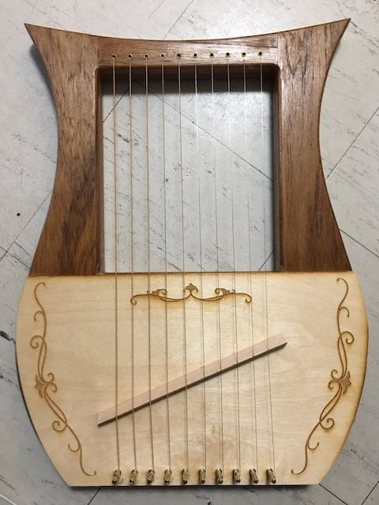
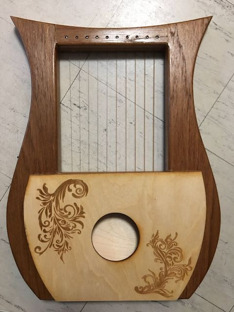

<div class="textcontainer">
<h3>About Me</h3>
<p class="margin"> </p>
<div class="center-row">
<p id="aboutme">
hello! i'm kira, and i'm a senior in the class of 2024 studying human developmental and regenerative biology. but i also love to make stuff, and i'm super excited to be capping off my harvard experience doing that in ps70. <br> i've been sewing, knitting, beading, embroidering etc. since i was a kid, but i never got into more hardcore fabrication until last year when i took an applied physics class. to be honest i didn't learn that much physics, but i really loved the project component of the course where we built things like cars, ramps, rube goldberg machines, electric safes, and diy instruments. coming out of that class, i really wanted to expand beyond basic design skills to make more complex projects with more advanced equipment. follow along with my design process starting at week 1!
</p>
</div>
<!-- <p class="margin"> </p> -->
<!-- <div class="flexrow"> -->
<!--  -->
<!--  -->
<!-- </div> -->
</div>